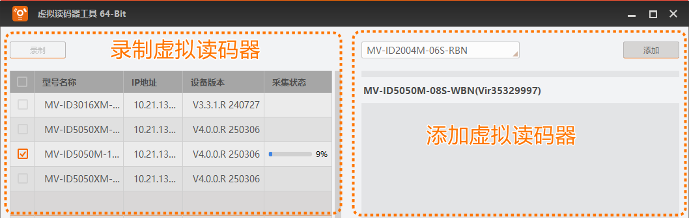

通过虚拟读码器可将实际读码器录制为虚拟读码器，还支持添加虚拟读码器。
虚拟读码器是IDMVS根据读码器实物模拟出来的，本质是运行在PC上的一段程序。通过该工具添加虚拟读码器后，即使PC未实际连接读码器，IDMVS的设备列表也能显示添加的虚拟读码器，连接虚拟读码器后可像操作读码器实物一样，进行采图、读码及其他功能调试，甚至二次开发。待后续连接实物时，再进行功能和程序验证即可，使读码器调试不受限于外界环境。
部分功能只能通过连接读码器实物来实现，虚拟读码器不支持。因此若您身边有读码器实物，还是建议使用读码器实物进行相关操作。
虚拟读码器预览时的图像为存放在某个路径下文件夹内的图片，具体路径为：C:\Windows\Temp\VirtualCamera\Cameras\虚拟读码器的序列号\Jpg。
添加虚拟读码器时，默认自带部分图片，若无法满足实际需求，可在对应为文件夹下添加新的图片。添加新的图片时，请注意图片需为JPG格式，且和该虚拟读码器的分辨率保持一致。
该工具支持2大功能，分别为添加虚拟读码器和录制虚拟读码器。

IDMVS默认已录制部分虚拟读码器，可直接使用。
添加虚拟读码器的方法为：在工具的添加虚拟读码器区域，左上角下拉选择需添加的读码器型号，再单击右侧的添加即可完成虚拟读码器的添加。
该工具仅支持部分型号的读码器，并非所有型号的读码器都支持作为虚拟读码器添加。具体支持的型号以添加虚拟读码器区域的下拉选项为准。
通过以上方法可添加多个虚拟读码器。完成添加后，设备列表的虚拟相机下会实时显示添加的虚拟读码器。
选中已添加的虚拟读码器，右键单击可删除该虚拟读码器。
虚拟读码器添加时，会同步生成虚拟的序列号，以“Vir”做为开头。若添加多个相同型号的虚拟读码器，可通过虚拟序列号进行区分。
以下2种情况，可通过该工具左侧的录制虚拟读码器功能满足需求。
需添加的虚拟读码器型号不在默认已有的虚拟读码器中。
已有的虚拟读码器固件版本和需添加的虚拟读码器固件版本不一样。
录制虚拟读码器前，需满足以下条件。
读码器为可用状态，未被其他应用（包括IDMVS)连接。
读码器未开启私有枚举协议功能。否则，无法搜索到该读码器。详情参见通用章节。
满足以上条件后，根据读码器的型号名称和设备版本并结合实际需求，勾选需录制的读码器，并单击录制即可开始录制。通过采集状态可实时查看录制情况。
录制过程中，请勿关闭该工具，且确保读码器网络通讯正常，否则会导致读码器录制失败。
完成录制后，在添加虚拟读码器区域可搜索到录制的读码器型号，且该虚拟读码器的固件版本为录制时实际读码器的固件版本。